Ships
Players grow by buying hulls at the shipyard across 12 classes, from the starting scout up to the top-tier "Apex Legend". There are 293 NPC ships, but only six actual hull archetypes underneath — they differ only in name, faction and role.
Player hull ladder
Twelve shipyard tiers. From destroyers onward, a brawler (main line) and a scout (alternate line) are listed together at the same tier — scouts have lower HP and shields but use more agile hulls.
| Image | Class (main / alternate) | Req. Lv | HP | Shield | Armor | Hull | Price (cr) |
|---|---|---|---|---|---|---|---|
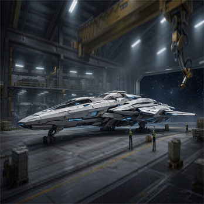 | Starter Ranger CM.I | 1 | 72 | 88 | 11 | patrol | 0 (starter) |
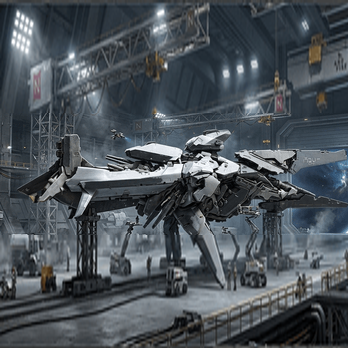 | Starter Fighter Mk.I | 1 | 560 | 210 | 16 | line | 0 (starter) |
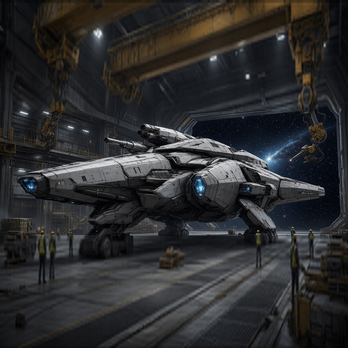 | Striker Mk.II | 7 | 400 | 95 | 9 | raider | 250,000 |
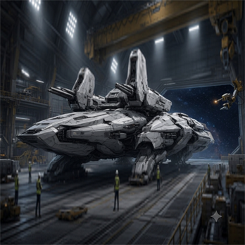 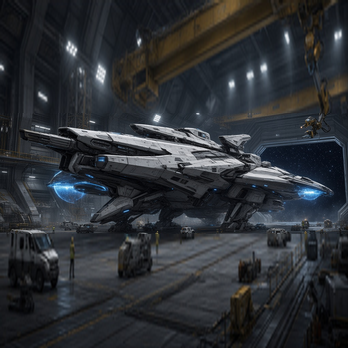 | Guardian Destroyer / Hunter Destroyer | 15 | 600 / 450 | 250 / 125 | 18 / 10 | patrol / raider | 1,200,000 |
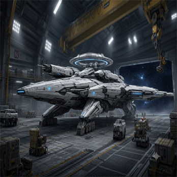 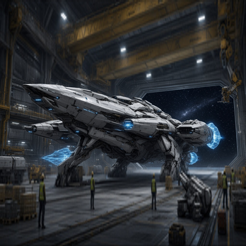 | Guardian Destroyer Mk.II / Hunter Destroyer Mk.II | 25 | 580 / 480 | 220 / 135 | 17 / 11 | line / raider | 1,800,000 |
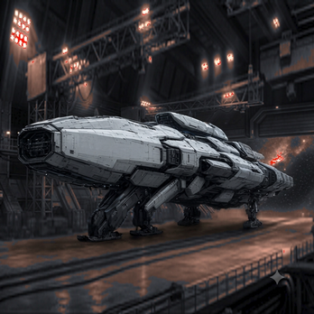 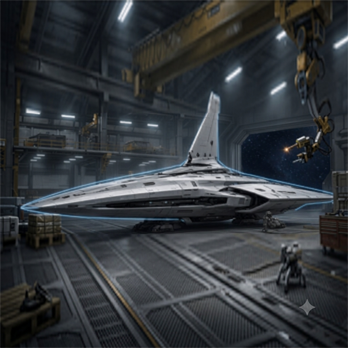 | Oracle Cruiser / Shadow Cruiser | 31 | 600 / 470 | 235 / 140 | 17 / 11 | siege / patrol | 5,000,000 |
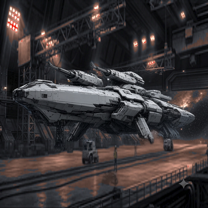 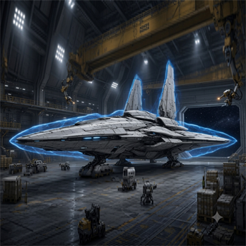 | Oracle Cruiser Mk.II / Shadow Cruiser Mk.II | 40 | 610 / 490 | 240 / 148 | 17 / 12 | siege / patrol | 7,500,000 |
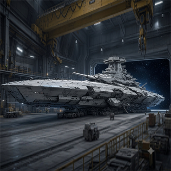 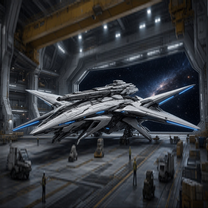 | Sovereign Battlecruiser / Raptor Battlecruiser | 52 | 620 / 500 | 245 / 155 | 18 / 12 | siege / raider | 15,000,000 |
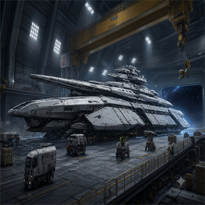 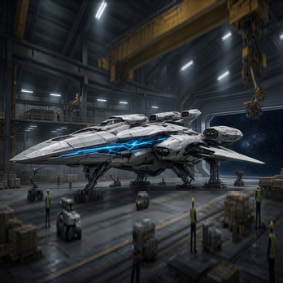 | Sovereign Battlecruiser Apex / Raptor Battlecruiser Apex | 60 | 640 / 520 | 255 / 165 | 18 / 13 | siege / raider | Upgrade peak |
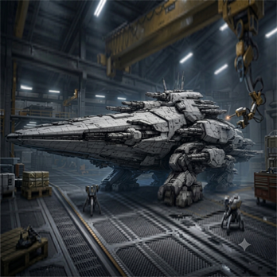 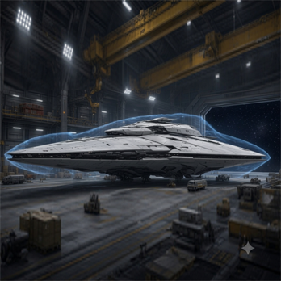 | Dreadnought / Phantom Dreadnought | 65 | 680 / 540 | 265 / 175 | 19 / 13 | siege / patrol | 25,000,000 |
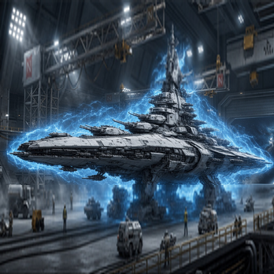 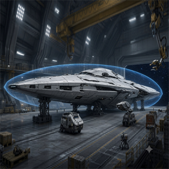 | Super Capital / Phantom Super Capital | 72 | 800 / 580 | 295 / 190 | 20 / 14 | line / raider | 50,000,000 |
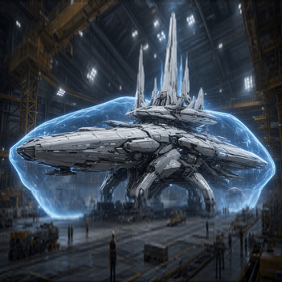 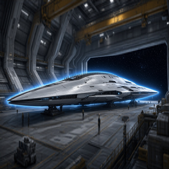 | Apex Legend / Phantom Legend | 80 | 880 / 620 | 320 / 205 | 21 / 15 | line / patrol | 100,000,000 |
"Apex" is not bought; it is the peak reached by fully upgrading a battlecruiser. Separately, the "Wave Defense Battleship" (HP 3,700 · shield 1,500), used only for wave-defense testing, is always listed in the shop.
Player ship gallery
Six hull archetypes
All 293 player and NPC ships share one of the six hulls below.
patrol
The most common light-to-medium patrol frame (192 ships)
raider
An agile raiding frame (35 ships)
line
The mainline frame of the player's top line (30 ships)
siege
A siege frame for cruisers up to dreadnoughts (15 ships)
research
Research and simulation frames such as the "Blue Fleet" (11 ships)
carrier_light
The "Survival Pod" light carrier (10 ships)
NPC fleets and factions
NPC ships carry role-based name variants per home system — Invader / Interdictor / Pursuer / Raider / Hunter and so on. Eleven home systems are registered in total: Arcadia, Draco Nebula, Solar Port, Minerva, Vega Outpost, New Eden, Iron Cross, Omega Station, Helios and Sirius, plus the contested-zone clan "Nightfall (Crimson Moon)".
Full ship list — 293 ships
The whole npc_ai_ships.csv: home system, hull and stats for every NPC ship, including the twelve player classes.
Wave-defense invaders
Wave defense uses 30 tiers of invaders, from npc_wave_invader_t1 to t30.
They all share the same base stats (HP 80 · shield 40 · armor 8); only their weapons grow stronger with the tier,
from a basic laser up to late "Singularity / Cosmega rocket" class — combat difficulty rises through weapons, not stats.
Equipment slots
Every ship has four base slots — ARMOR · ENGINE · SYSTEM · EX_01 — and, depending on the 57-item equipment catalog, can expand up to EX_04 and FIGHTER.
Comments on this page